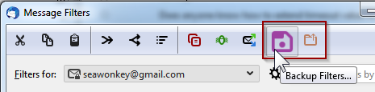

QUICKFILTERS PRO
Now you can support the future development of quickFilters and save money while enjoying
unlimited Premium Features.
Install quickFilters
version 3.4
or higher and then
click the Buy License item from the quickFilters Pro tab on the Options dialog:

It's the easiest way to get a license as you get to select an email address for registration and delivery.
If you prefer, you can also go to the web shop directly:
FastSpring Web Shop
I have kept the process as simple and hassle free as possible, and you can use
quickFilters Pro on as many Thunderbird installations as you like as long
as it has your registered email address on it. Also, the email address is not given to any third
parties, it is only used for order fulfillment and license verification.
|
Premium features are power functions which are an incentive for users to regularly support
the quickFilters project through a yearly contribution, called quickFilters Pro license.
My aim is that instead of very few people trying to carry the project with sometimes large
donations to try involving more supporters. It is a lot of work to keep the project
going and up to date with all the latest code changes which happen every 6 weeks on the Mozilla code base.
Staying in sync with the three applications (Thunderbird, Postbox and SeaMonkey) and to support multiple
platforms (Windows, Linux and Mac) and languages and writing support emails and fixing bugs is actually a lot of work.
I would rather actually spend more time on this as opposed to maybe 6 to 12 hours / week, but for this it
needs to be financially viable.
Premium Features Included
Here is a list of Premium features that are unrestricted to licensed users of quickFilters Pro.
For non-licensed users, the premium features may be restricted and when used display a notification bar
in order to promote buying a license. I feel this is the best way as it gives you a chance to try them out and
get an idea on what other great future functionality will be funded by supporters:
| Premium Feature |
What does it do? |
| Sort Filters |
use this to sort all selected filters by alphabet. Be careful as the order
the filters are displayed in is also the execution order. This means that
you may have to rename some more specialised filters so they appear before
more general ones (e.g. have the filter move to clients\Acme filter listed
before the move to clients filter.)
Otherwise you may find your emails in unexpected locations: An email that has already
been moved away from the Inbox will not be treated by the following filters.
There is also an option on the "New Filter Properties" tab that enables to insert
new filters in alphabetical order. This will work best if the existing list of
filters is already sorted alphabetically. This is becayse it will not "look ahead" beyond
alphabetically lower entries and attempt to insert the new filter after them.
|
| Custom Templates |
These "Advanced Templates" can be created from the Advanced tab of the
quickFilters preferences dialog. These are new filter templates that will then
show up during the filte assistant process as choices for new filters. They will
preselect & prefill some filter conditions based on a big number of mail
attributes.
Custom Templates are stored like standard filters but are located in the "Local Folders" account
and have the string "quickFilterCustomTemplate" in the start of their name.
The rest of the name is what is shown in the assistant dialog.
|
| Backup / Restore |

[Available from version 3.5] - you can now save your filters
for each mailbox to a file and load them later or transfer to a different Thunderbird profile.
For technical reasons, currently old filters will not be overwritten - therefore unwanted filters should be
removed manually after restoring to avoid duplication.
When transferring to a different profile, Custom filter actions (e.g. create with FilteQuilla) will only work
if they are set up exactly the same on both
profiles.
|
| Search Folders for Filters |
This command makes it possible to find all filters that move emails to a specific
folder. this is especially helpful when mail is moved / copied across different
mail accounts or into Local Folders. Right-click a mail folder from the
folder tree on the left hand side of Thunderbird's 3 pane window and select
Find Filters....
QuickFolders users can also add this button to the
Current Folder toolbar.
|
| Find Duplicates |
This is a button on the quickFilters toolbar in the Filters List which searches
for various types of duplicates, such as filters that do the same thing
(like move mails to the same folder) or have duplicate conditions. It is a great
utility for tidying up unclear filters or even find filters that do unexpected stuff.
|
| Local Inbox |
Option to run filters on Local Folders Inbox automatically.
With this new option, any emails that are moved to the Local Folders Inbox will be automatically
processed again using the filters defined there. With Thunderbird out of the box this behavior
cannot be achieved as there is no "Get new Mail" event on Local Folders.
You can activate it on the Pro tab of quickFilters options.
|
Other Benefits of having a Yearly License
You know that you support the project and that the development and support will be continue.
There is a huge amount of work involved not just programming and keeping quickFilters up to date
but also supporting users, coming up with better ways of doing things, fixing bugs, and keeping
quickFilters usable across various platforms and host programs (at the moment I support Thunderbird,
SeaMonkey and Postbox). I am constantly helping people with using quickFilters and their mail program
and how to get the most out of email on the desktop.
All notification messages that indicate premium features are omitted.
The donation screen (which is normally shown after every Update) is hidden.
Alternative Monetisation Models
There are quite a few software developers (and also some users) who believe
that software should generally financed by advertisement or even by selling
information about their users.
I am firmly opposed to this way of making money as it impacts
both productivity and privacy rights; also in the world of Email I would
find this way of generating value deeply problematic - even if it was
strictly opt-in. There is a lot of personal information in our daily mail
and a lot of knowledge that is being stored and retrieved with this powerful
tool.
One of the reasons for a personal Email Client on the desktop
is the fact that we can store our data on our personal hardware and use it
any way we like. On the other hand, if we use a web mail client (like gmail)
we can never be sure whether the information is used otherwise and whether
we get targeted with distracting information (be it by injecting advertisements or via
targeted advertisement emails) - it is one of the goals of any mail desktop client
to eliminiate these distractions as much as possible, and focus on one thing only:
managing communication.
quickFilters is an especially powerful set of tools to harness this
information and it will evolve and keep saving time and make your experience
of mail more meaningful and intuitive.